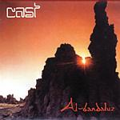

| Artist: | Cast |
| Title: | Al Bandaluz |
| Label: | Musea FGBG4512.AR |
| Length(s): | minutes |
| Year(s) of release: | 2003 |
| Month of review: | [10/2003] |
| 1) | Viajero Inmóvil | 7.09 |
| 2) | Jerezcali (Pueblo De Dos Mundos) | 8.52 |
| 3) | Encrucijada | 17.25 |
| 4) | Lamento Del Gato | 9.55 |
| 5) | Damajuana | 4.17 |
Disc 2:
| 1) | Viento | 5.01 |
| 2) | El Puente | 22.01 |
| 3) | La Ballesta | 8.46 |
| 4) | Ensamble Al-Mayá 5.26 | |
| 5) | Ansia, Angustia, Desesperación | 7.10 |
Jerezcali (Pueblo De Dos Mundos) is the next one up. See if the band can hold on to this level. This one opens a bit quieter, but there is that orchestrality again in the sound of the band. The guitar is more audible here, but still in a supporting role, repetitively playing away. Washes of cymbals, something the new drummer seems to love to do ring out, while the keyboards are somewhat low key, somewhat somber. Piano dancing lightly when the vocals start. A marked difference from earlier albums is that the vocals are all in Spanish. I think this is a good thing, they fit well with the music, same as Italian would. A drawback is that the vocals lie under the music, and as a consequence are not that clearly audible. The song harbours, unfortunately, also some frolic parts. The guitar lines are quite complex sounding here. Tony Banks can be heard in some of the keyboards too. Except saying that this is symphonic rock, there are few references that I can give (which I assume Cast will not mind). Round the six minute mark we get some speedy keyboards and drumming, after which the vocals return for a closing passage. The vocals are emotional enough, but they do not always come out well.
Encrucijada is the epic on this first disc, separated into three parts. Fast jazzy piano runs open the song which also features some more rowdy guitar work. For symphonic rock there is quite a bit of tension and foreboding in the music. The saxophone adds some more urgency to the music, as it did in the first track. Again, supreme symphonic material here. After this introduction we get into some quieter waters a bit later: the repetitive guitar lines continue, but the sound is less full and the sax is now gone. The guitar now takes on a melodic guise with the keys supporting more accidentally and the bass pumping. Well I could go on like this, but why should I. The band has shown its face. On a track such as this you can find many varying passages, some of them returning once in a while with light classical influences, but also plenty of tension, power and stamina when the song needs it. A small symphony.
Lamento Del Gato is a bit more pompous than the previous. Again Vidales plays strong with piano and keyboards hammering away. The distorted guitar plays a supporting role, forming the groundfloor. The drummer plays variedly, interjecting fills wherever he can. Although I think the pompous part is a bit overdone, the opening does have some very good moments. The music takes some gas back giving way to nice organ playing building a more somber mood. Then the piano takes reign with acoustic guitars resounding in the back and the vocals, finally, return. Hernandez has something of a wavery voice, a bit in the line of Gabriel but friendlier. The vocal melodies are good, more distinctive than on track two. Towards the end of the song the power goes up again, the bombastic opening passage returning this time with flute.
Damajuana is the relatively short closer of the first disc. We hear moody piano giving way to friendly flute playing. Compared to the previous songs, this comes out rather uneventful. Very undistinctive.
The band continues on disc two with Viento. The wavery vocals of Hernandez are very sad and fragile on this one, and the vocal melody is a good and memorable one. The instrumental part consists of piano and a bit of flute. Beautiful.
El Puente is the epic of this disc, more than twentytwo minutes spread over four parts. It opens in mid-tempo, rather easy-going in fact with a bit of a blues feel. Occasional piano in the one ear, lazy guitar work in the other, this seems to me to be quite uneventful. Organ sets in, but the mood stays relaxed. Only after a few minutes does the guitar become a bit more forceful. Around the four minute mark does the rhythm guitar set in, spreading repetitive patterns in conjunction with the piano. Off-beat signatures here and at times when the music goes a bit more full-out I like it a bit better. For the remainder it seems to me at this point that this is quite a bit below what I heard on the first disc. At the six minute mark we get vocals similar to previous ones. The chorus is quite enthusiastic again and reminds also of earlier vocal passages. I do not understand Spanish, but it would not surprise me if this is a concept album. Then the song powers up again with flashy keyboard solo and rhythm guitar work, giving way to strong dancing piano playing (the rhythm guitar simply continues). The guitar solo is a meandering one, and the music is electrifying. The music dies down to playful piano playing, but only for a little while, because here come the keyboards again. Weird effects and varied drumming alternate with the dancing piano. The vocal harmonies are in the line of the Italian progressive bands of the seventies, but the rhythm guitar belies this fact. A strong conclusion results, with driving guitarwork and keyboards.
La Ballesta opens with runs on piano, playing some fine melodies. Their is again a Tony Banks feel at times, but the music is more classically oriented than that. Very distinctive this. The next passage is more romantic, but still the piano reigns, although nylon string guitar also plays a role. The music becomes even more romantic then, and flute sets in. At the four minute mark, the vocals set in. Hernandez has a soothing vocal melody to sing and their are even some vocal harmonies here. The song is very much in the line of seventies Italian prog. It does continue to stay soothing and dreamy throughout.
Ensamble Al-Mayá opens with naked percussion, after which a bass starts to throb along. There is something quite menacing about this. The guitars figure prominently on this psychedelic track which becomes quite rowdy later on. Something different. The album is conluded by Ansia, Angustia, Desesperación. This is a somewhat meandering instrumental and less strong than the previous songs. It does give the band the opportunity to show what they can do and there is a certain energy evident. But melodically it can not really convince me.